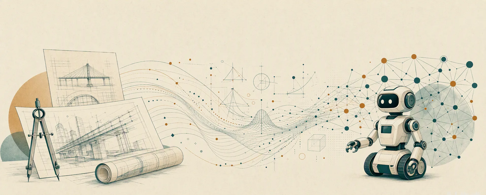
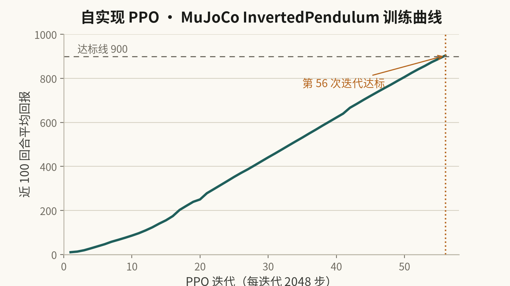
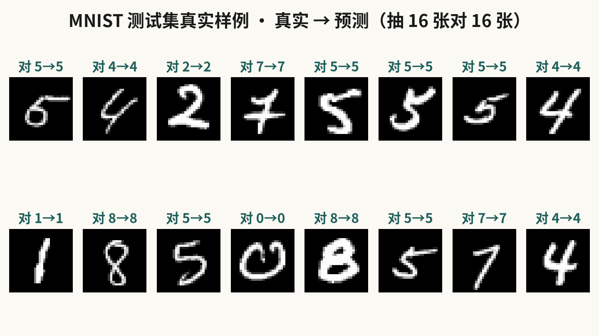
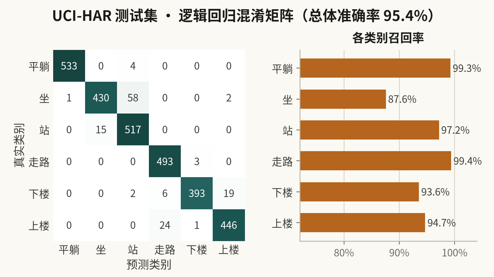
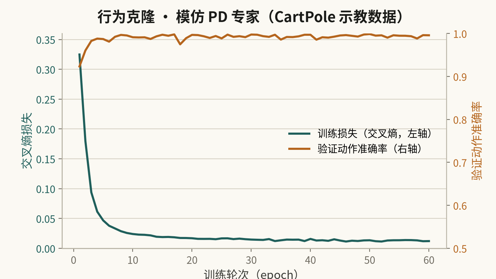
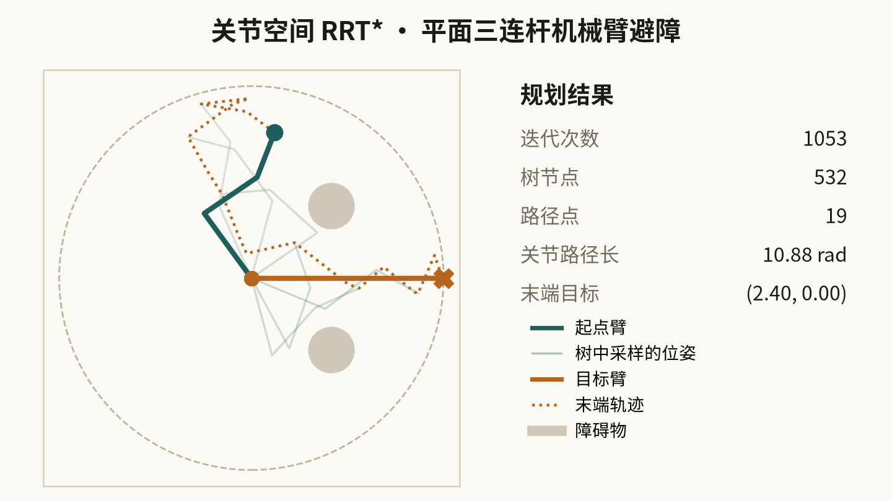
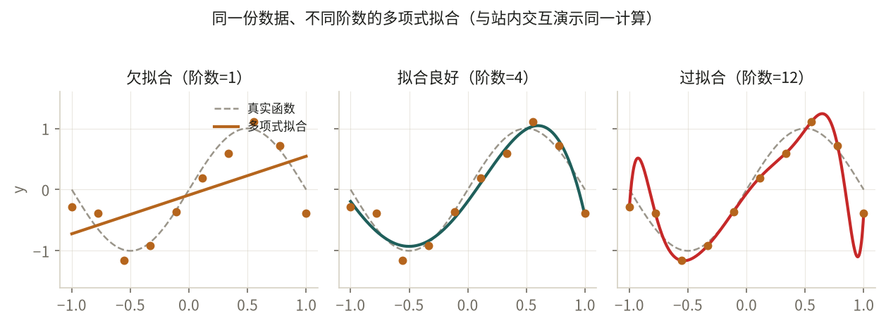
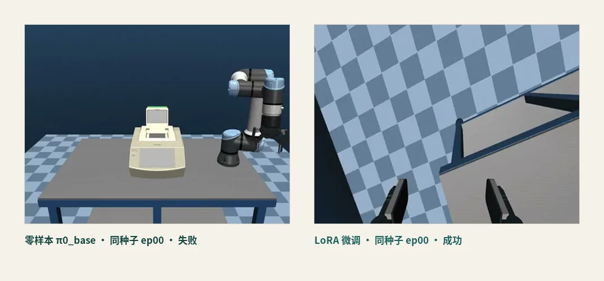

From blueprints to code.

Year one in civil engineering (theoretical mechanics, engineering drawing), then switched to Big Data Management & Application. I believe the essence of intelligence lives in algorithms and data — so I start from math and physics, and build everything in code with my own hands.
I keep an Obsidian knowledge base recording every course and every piece of code, and honestly mark where I really stand on each thing — built it, ran it, or merely cloned to study.
Why embodied AI.
"Hardware has become a commodity.
What still separates the leaders is the brain — algorithms and data that let machines learn, decide, and generalize in the physical world."
A cross-disciplinary base
Theoretical mechanics → robot dynamics; operations research → motion planning (MPC). A base that carries over after the switch.
The body side is my weak spot
Robotics & control remain low in my self-assessment; RL just getting started. The next two years go here — starting in MuJoCo / Isaac simulation.
Simulation first, hardware later
A robot arm starts at a few hundred RMB. Before joining a lab, simulation is the cheapest route — and the one that exposes algorithm problems fastest.
The road so far, and ahead.
Hunan University · Civil Engineering
Grounding in calculus, linear algebra, theoretical mechanics, engineering drawing; proficient with AutoCAD & Revit. Class monitor.
Calculus 86Linear Algebra 83First exposure to programming & AI
Systematic Python and the data stack; following along with C. Interest shifted from civil to algorithms and data.
Python mainC 91%Direction locked: Embodied AI
T800 course, MuJoCo simulation, URDF modeling, LeRobot behavior cloning (open-source project cloned to study, not reproduced); ran first RAG / Agent tutorials.
MuJoCoURDFRAGSwitched to Big Data Management & Application
Switched without losing a year; all credits carried over. This semester I take probability and databases in class and cover machine learning on my own — plus six self-taught projects shipped on this site.
SklearnPyTorchProbabilityFirst VLA foundation-model fine-tune
Fixed upstream code and LoRA fine-tuned π0 on the AutoBio benchmark: 7.5 h on one GPU, 0/6 → 18/20 (90%), weights public. From "calling a model" to "fine-tuning one".
π0LoRAJAX18/20What I'm building.
Ordered from "consolidate what exists" to "attack the core of my direction". Statuses are honest — in progress means in progress, planned means planned.
 Source · AutoBio benchmark, same-seed eval · per-episode results public
Source · AutoBio benchmark, same-seed eval · per-episode results public
AutoBio × π0: LoRA fine-tuning a VLA foundation model
Done · single-task reproductionRepaired upstream code on the AutoBio robotics benchmark and LoRA fine-tuned the VLA foundation model π0: 7.5 h on a single RTX 5090, lifting thermal_cycler_close from zero-shot 0/6 to 18/20 (90%). Training curves, per-episode results and rollout videos are all public and reproducible.
Python · JAX · openpi · π0 · LoRA · MuJoCo
Source · self-implemented PPO training log · solved at iteration 56DQN and PPO hand-written in pure PyTorch, no RL libraries; the same PPO migrated to MuJoCo physics, re-evaluated 20/20 perfect on InvertedPendulum. Play CartPole yourself on the page — or watch the trained policy do it.
PyTorch · Double-DQN · PPO · GAE · MuJoCo View project →
Source · MNIST test set · raw model predictionsA small hand-written CNN trained on real MNIST to 98.9%. Weights exported to the browser: draw a digit, lift the pen, it recognizes — inference runs locally on your machine.
Python · PyTorch · CNN · MNIST View project →Notes I have kept since enrolling, distilled into 35 passages for natural-language Q&A: vector retrieval finds the most relevant notes, DeepSeek composes the answer. The corpus is what I actually learned — so the answers are real too.
Vanilla JS · bge-m3 · vector retrieval · DeepSeek View project →
Source · UCI-HAR test set · logistic regression outputsEnd-to-end ML pipeline
CompletedThe full workflow on UCI smartphone-IMU activity recognition (561-D features, 6 classes): cleaning → feature engineering → pipeline → cross-validated model selection → tuning → evaluation → Streamlit demo.
Python · Scikit-learn · Pandas · Streamlit View project →
Source · behavior-cloning training log · CartPole demosLeRobot behavior cloning
In progressA PD expert demonstrates, an MLP imitates — turning "learning a policy" into supervised mimicry. 99.6% action accuracy on validation, plus an honest account of covariate shift, the core pain of BC.
PyTorch · Behavior Cloning · Imitation Learning View project →
Source · planner output · metrics match the published treeRobot-arm motion planning
In progressJoint-space RRT* plans collision-free paths for a three-link planar arm: forward kinematics + link collision checking. An interactive workspace RRT* demo sits at the top of the page — place obstacles yourself.
Python · NumPy · RRT* · Forward Kinematics View project →
Source · polynomial-fit experiment · same data as the on-page demoLinear regression (hand-written SGD), softmax regression and an MLP, each from scratch; plus a draggable underfitting/overfitting demo showing bias–variance trade-off in real time.
Python · PyTorch · NumPy · from scratch View project →If it ran, it gets written down.
Only what I have actually reproduced, and can back with raw data and public artefacts. Every piece keeps its scope caveats — what holds, and what does not.

Reproduction notes 001 · 2026.10.07 · 中文 AutoBio on a single RTX 5090: 5000 LoRA steps taking a lab robot from 0% to 90% Repairing a frozen upstream snapshot, fine-tuning pi0 with LoRA instead of full-parameter training, and using a same-seed control to show the gain comes from the weights themselves. Eleven documented pitfalls, plus public code, weights and evaluation material. (Article is written in Chinese.) Read the article →Also published on CSDN, Zhihu and Juejin. All writing →
Where I stand.
- Programming: 75 / 100
- Data structures & algorithms: 15 / 100
- Math: 65 / 100
- ML / DL: 38 / 100
- Robotics & control: 10 / 100
- Reinforcement learning: 30 / 100
- Simulation: 32 / 100
- LLM / Agents: 55 / 100
Eight-axis self-assessment for embodied AI (out of 100) · updated 2026.10
Programming & engineering
ML / DL
Robotics / simulation
Math & engineering
Education.
Hunan University · Big Data Management & Application
2026.09 — present| Stage | Focus | Result | Note |
|---|---|---|---|
| Y1 · Civil engineering | Math & mechanics base | weighted avg 82.71 (Calculus 86 / 80 · LinAlg 83) | first attempts |
| Y2 · switched to Big Data | bridging courses + self-study | courses in progress · grades 2027.01 | no lost year · credits carried over |
| Now | probability / databases courses + self-taught ML | in progress | still climbing |
The weighted average 82.71 comes entirely from first attempts in year one; grades for the courses after the switch land in January 2027. What I care about is not a single score but whether the trajectory keeps going up.
Hunan University · Civil Engineering
2025.09 — 2026.06This semester.
From "running" to "fine-tuning"
Progressing Sklearn → PyTorch → RL → VLA fine-tuning: after hand-writing DQN / PPO from scratch, recently completed a π0 LoRA fine-tune on the AutoBio benchmark (18/20); an Obsidian knowledge base turns the process into a public trail.
Innovation & entrepreneurship pilot class (robotics)
Comprehensive interview in early November — practice for stepping into robotics.
Foundations & frontier reading
Dive into Deep Learning from scratch · probability & statistics · Linux fundamentals; following a VLA (vision-language-action) reading list.
Contact.
If you work on embodied AI, robot learning, or cross-disciplinary growth — teachers and fellow students alike — feel free to email me. I'm currently looking for undergraduate research / internship opportunities, especially in simulation and learning algorithms.